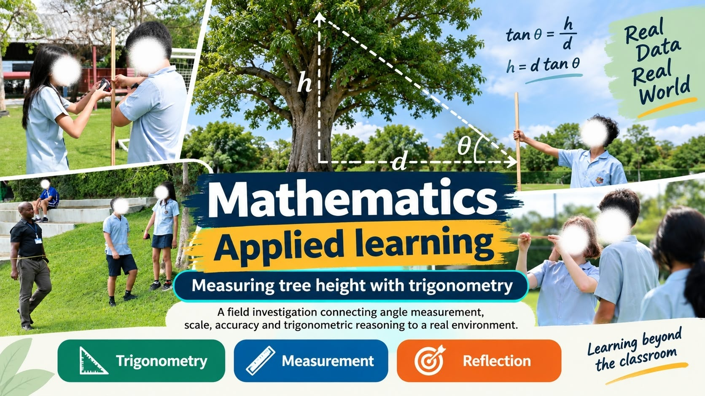

Mathematics
Algebra, geometry, trigonometry, number, statistics and mathematical problem-solving taught through carefully sequenced modelling and practice.
- KS3–KS5
- IGCSE & A Level
- Assessment design
Mathematics + Computer Science Education
An experienced secondary educator combining rigorous Mathematics and Computer Science teaching with Python, Java, machine learning, web development, VEX robotics and physical computing.
Professional profile
I am a Mathematics and Computer Science teacher with experience teaching in the United Kingdom and Thailand. My classroom combines clear explanation, progressive challenge and purposeful practical work.
I guide students from foundational knowledge to independent application—whether they are solving a mathematical problem, debugging a Java class, training a machine-learning model, designing a website or programming a robot.
My practice is shaped by differentiation, inclusive education, support for multilingual learners and the belief that students learn technical ideas most deeply when they create, test, reflect and improve.
Teaching expertise
I connect conceptual knowledge with authentic challenges so students understand both how a solution works and why it matters.
Algebra, geometry, trigonometry, number, statistics and mathematical problem-solving taught through carefully sequenced modelling and practice.
Algorithms, programming, systems, networks, databases, OOP and computational thinking across international secondary curricula.
Age-appropriate introduction to data preparation, supervised and unsupervised learning, evaluation, applications and ethical impact.
Hands-on engineering with VEX systems, Arduino programming, sensors, actuators and foundational electronic circuit design.
Selected work
A structured enrichment programme in which students prepare data, train introductory models, evaluate predictions and discuss responsible AI.
Open project video ▶Students design, programme and refine a robot while applying measurement, algorithms, teamwork and systematic testing.
Open project video ▶
A field investigation connecting angle measurement, scale, accuracy and trigonometric reasoning to a real environment.
Download sample student project report ↓Progressive examples move students from objects and classes to encapsulation, inheritance, polymorphism and larger programs.
Open video in a new tab ▶Students progress from simple LED circuits to programmed systems using inputs, outputs, sensors and Arduino code.
Open project video ▶Students plan, build and evaluate accessible web pages while developing fluency with HTML, CSS and JavaScript.
Open video case study ▶Student learning & impact
“Paul has set clear, highly relevant professional development targets focused on collaborative learning and real-world application. His plan to integrate Think-Pair-Share and peer programming into the Computer Science curriculum demonstrates a strong focus on building critical teamwork and problem-solving skills. This classroom goal is perfectly complemented by his commitment to running a two-term website development ECA, providing an inclusive platform for students of all abilities to master industry-relevant tools. Beyond these targets, Paul's wider contributions to the school have been exceptional. He has successfully enriched the ECA program, guiding students to build functional software like online booking systems, while his curriculum development work ensured the GIS Computer Science syllabus is fully aligned with the revised IBDP standards. Furthermore, Paul brought his technical expertise to the wider school community by managing real-time scoring for House Sports Day and supporting an industry-focused Computer Science trip, which inspired students to design their own space-themed games. Demonstrating an admirable commitment to professional growth, he also completed Machine Learning training, positioning himself to introduce cutting-edge AI concepts into future projects. Paul is highly commended for his forward-thinking approach and outstanding dedication. ”— Ms Patel - Head of faculty of Mathematics and Technology (GIS, Rayong Thailand)
Experience & development
Garden International School, Rayong, Thailand
KS3–KS5 · IGCSE · A Level · IBDPUnited Kingdom
Hawarden High School - GCSE & A Level·
St John Plessington Catholic College Liverpool - GCSE & A Level
Nigeria
Thames Valley College Sagamu - IGCSE & A Level·
Ajinapa Grammar School Ogbomoso- WAEC
UK Qualified Teacher Status ·
Member Ontario College of Teachers Canada
IBDP Computer Science workshops- 2023 & 2025 .
Carnegie Mellon University Robotics Academy October 2026·
University of Michigan Machine Learning -2025·
University of Capetown Disability and Inclusion in Education - Building a system of support - 2025
Verified learning
Degrees, postgraduate qualifications and teaching licences
1. University of Benin - Electrical & Electronic Engineering · 2007
2. University of Ilorin - Computer science . 2015
University of Chester · 2022
Ontario College of Teachers, Canada· Status - Active
The Department for Education UK. Status - Active
Selected learning that supports your specialist teaching
Click to download Workshop certificates.5
Click to download certificate
Click to download certificate
Selected resources
Let’s connect
I welcome opportunities to contribute to an ambitious, inclusive school community.